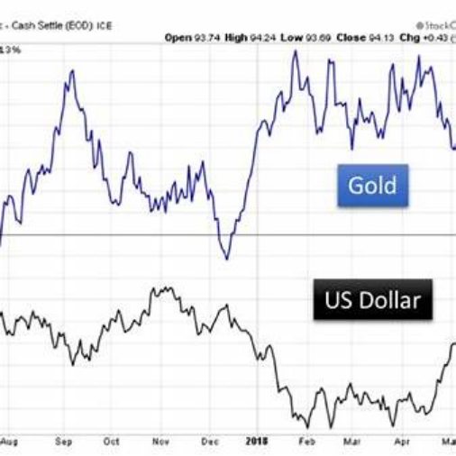
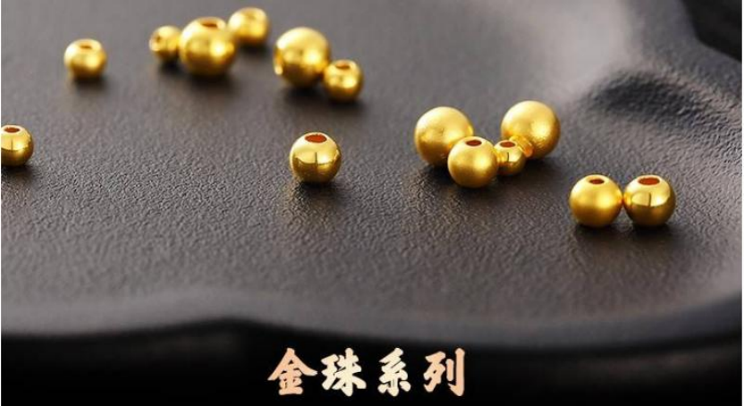
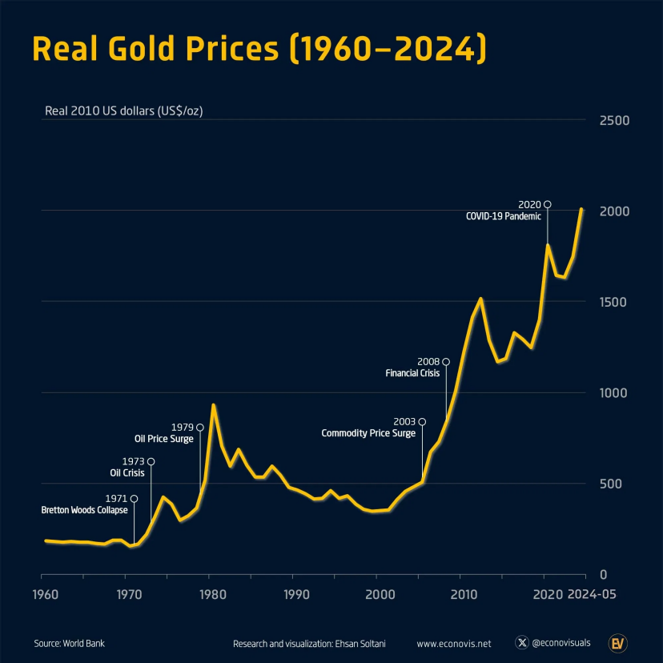
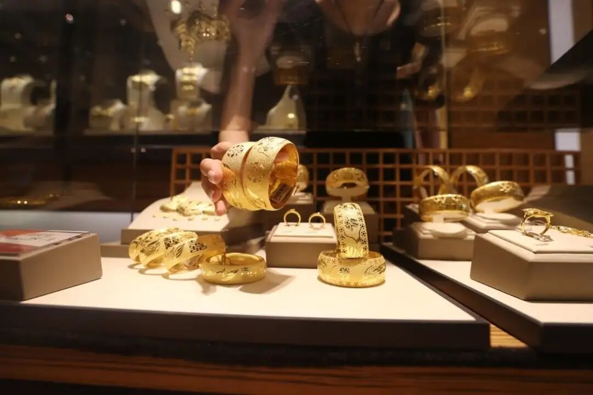

作为一项投资品，黄金的价格自今年8月下旬以来走出一波超高行情，并在10月20号左右达到了4300美元每盎司的年度峰值，但是在最近几周，现货黄金价格整体呈回落态势，目前在4000美元的价格线左右徘徊。与此同时，国内市场上许多品牌金饰的标价却仍在延续在今年八月底以来的涨势，周大福的黄金报价一度接近1300元/克的关口，近日则出现小幅回落的迹象。同为“黄金”，却在两个维度、两条逻辑中走出截然不同的轨迹，这种价格的背离一时让市场侧目。若要想了解其中的玄机并对未来趋势做些判断，就需要从黄金的“投资逻辑”与“消费逻辑”两端入手进行拆解。
“投资逻辑”主导黄金价格涨落
经历了一轮强劲上涨之后，国际黄金价格近来开始回落。伦敦现货金一度跌破每盎司4000美元关口，市场情绪从此前的高亢转向谨慎。表面上看，这不过是金价的短线调整，但背后，其实是三股宏观力量的重组：美元重新走强、利率维持高位、全球风险偏好悄然回升。
因为国际黄金是以美元计价的，因此要洞悉金价的秘密，就不得不从美元说起。在货币世界里，黄金与美元的关系始终微妙。两者往往此消彼长：美元坚挺时，黄金受压；美元走弱时，黄金获益。近期，美元指数重新逼近多月高位，而支撑起这一走势背后的力量是美国经济数据的韧性以及美联储在降息问题上的谨慎态度。

美元vs黄金
尽管今年以来饱受关税战、地缘经济碎片化等多股力量的侵扰，但是从数据上来看，美国经济的表现依然可圈可点：就业依旧强劲，通胀虽缓但未稳，美联储官员的措辞逐渐从“准备降息”变为“继续观察”，今年9月和10月的两次降息力度和频度均远低于市场预期，美元因此重拾上行势头。对非美元投资者而言，金价以美元计价，美元走强意味着购买黄金的成本上升，需求自然受抑。
更关键的是，强势美元重新吸引了全球流动性——投资者更倾向持有美债或美元资产，而非不生息的黄金。于是，在美元的光芒之下，金融市场对黄金的注意力出现了短暂的滑坡。
除了美元以外，利率是黄金价值逻辑的另一条主线。黄金不产生利息，也不派息分红，它的吸引力往往建立在“其他资产收益下降”或“货币贬值”的背景之上。而在当前环境中，这两种支撑力量都在减弱。过去几个月,10年期国债收益率持续徘徊在4.1%上方。维持在高位的利率让投资者重新计算起持有黄金的机会成本：当国债能轻松锁定年化4%以上的收益，而黄金只能静静“躺”在金库里时，部分资金选择了“离开”。
更深层的逻辑在于“实际利率”的变化。通胀温和下行，而名义利率坚挺，使得实际利率走高。对黄金而言，这无疑是最不友好的宏观环境。高实际利率意味着货币的购买力更稳、债券收益更优、流动性回报更高。黄金的“无息特性”在这种环境里，被放大成一种劣势。
另外，还有一个促使价格回落的原因是黄金为人们提供的“情绪价值”开始松动。过去一年，推动金价飙升的一个重要原因是地缘政治与金融风险叠加催生的“避险情绪”高企。央行购金潮、战争阴影、通胀焦虑，共同制造出一轮避险买盘。而进入2025年四季度，这种“避险驱动”开始减弱。首先，全球主要股指稳步上行，经济衰退的担忧暂时退场，风险资产重新获得青睐。部分投资者从前期黄金的涨势中获利退场，转向股票、债券、甚至加密资产等更具成长性的标的。金价的调整，某种意义上是“市场心态变了”的直观反映。
因此，在通胀高企、美元走弱、央行扩表的背景下，黄金被视为货币体系的“保险”；但当利率上行、美元强势、通胀缓和，这份“保险”变得昂贵。黄金的价格回落，不是投机者的惊慌，也不是价值的崩塌，而是“投资逻辑”的再平衡。
“消费逻辑”引导国内品牌金饰价格波动
黄金是制作金饰的必备原料，因此国内金价与国际金价高度联动，但这并不意味着二者的价格的走势总是“如影随形”，当前出现的短期背离主要是价格的滞后传导造成的。从供应链的角度说，处于零售端的饰品属于产业的下游，除了受国际金价波动的影响以外，厂商定价策略、加工工艺升级、品牌溢价等因素会显著放大波动对消费者价格的传导，因此饰品单位价格上涨往往滞后于现货价格。就像11月初的国内金饰价格逆势上扬是前期国际金价飙升的滞后反应一样，当前的金饰价格回落也是这个机制使然。
从定价体系上看，国内品牌金饰与国际现货金完全是两套逻辑。品牌金价通常由“金料价+工费+溢价”构成，而这三项都具备独立的波动节奏。
首先是品牌溢价。周大福、老凤祥、中国黄金、六福等品牌，早已不只是卖“克数”，而是在卖“形象”与“文化认同”。以2024年10月为例，多家品牌的门店金价已达每克730元以上，相比上海期货交易所黄金主力合约约596元/克的金料价，零售端存在近20%—25%的溢价区间；其次是滞后效应。零售商的金料库存并非实时结算，而是按照批次采购。当国际金价上涨时，品牌会迅速提价以锁定利润；而当金价回落，零售端往往仍沿用前期高价库存，短期内不会急于下调零售价。消费者看到的“金价涨”，其实是“库存价在释放”。
此外，品牌定价还带有“心理锚”的作用。金店很少降价，而更倾向于通过赠品、积分、活动等方式消化波动。价格的稳定与上行，本身也是品牌维持高端形象的一部分。
除了这些供给端的因素以外，支撑本次黄金饰品的价格上升趋势也包含需求端的因素。首先，金饰的需求群体发生了更迭，与十年前不同，如今推动金饰热潮的主力，不再只是结婚新人或中老年储蓄者。“金豆豆”“金手镯”“小金条”“投资型金链”这些新产品，正在被20岁出头的年轻消费者重新定义。黄金不再局限于婚嫁的仪式感，而是可触摸的理财品、甚至有演变成一种社交货币的端倪。据世界黄金协会（WGC）数据显示，2025年第一季度，中国消费者在黄金首饰上的支出约为840亿元人民币，同比增长近三成。因此，可以说本轮金饰价格上涨的根本支撑，不在金料成本，而在消费需求的“再定义”。

吸引年轻人的金珠系列
除了以上基于黄金物理属性的传统需求增长以外，黄金的“消费逻辑”中还混入了越来越多的“投资逻辑”。当前黄金消费热不是单纯的“首饰潮”，而是一种“心理资产配置”：在房产低迷、理财收益下滑、金融风险加大的背景下，消费者将黄金视为“可佩戴的储蓄”。在投资心态的驱使下，年轻人购买小克重金饰的动机，已从“美观”转向“抗风险”与“情绪安全”。如此一来，当金价下跌，他们反而更愿意“趁低囤一点”；当金价上涨，则验证了他们的“理财正确性”。
总之，在今天的中国市场，“买金”已经不只是消费行为，而是一种资产情绪的表达。
未来黄金的价格将走向何方？

Real Gold Prices (1960-2024)
展望未来，黄金的价格走势将继续受到宏观政策与消费结构两端力量的共同影响。
在投资层面，金价的方向仍取决于全球货币环境和风险情绪的变化。若美联储或主要央行进入宽松周期的态度更加坚决、降息预期增强，黄金的持有成本将显著降低，从而重新获得资金青睐；若美元走弱、汇率压力加大，黄金的吸引力也会提升。同时，任何地缘政治紧张或金融系统风险上升，都会恢复黄金的避险功能，推动价格上行。然而，若经济复苏延续、利率维持高位、股市回报更具吸引力，黄金可能再度承压。因此，投资者应将黄金视为资产组合中的“防御性配置”，而非单纯的价格投机。
在消费端，国内金饰市场的逻辑依旧强劲。品牌化、设计化、小克重化的产品趋势，以及社交媒体和直播渠道的扩张，将继续推动金饰消费升级。消费者的需求正在从传统婚嫁用金，转向“日常佩戴＋理财属性”并重的方向。世界黄金协会的报告显示，尽管黄金首饰消费的吨数下降，但支出金额持续上升，体现出“买得少但买得贵”的趋势。未来，如果金料成本上行、品牌定价权增强、渠道创新加速，金饰零售价仍有上升空间。不过，也需警惕潜在风险——一旦国际金价大幅下跌或消费者支出结构改变，金饰市场可能面临“价格高企但销量放缓”的局面。
因此，无论是投资者、消费者还是品牌方，都应保持理性。对资产配置者而言，黄金应被视为长期风险对冲工具，而非“必涨资产”；对消费者而言，理解金饰价格不仅由金料决定，更包括品牌、设计、渠道和文化溢价，理性看待“金价涨跌”尤为重要；而对品牌及从业者来说，唯有在创新渠道、控制库存、优化成本的同时，保持与消费心理的共振，才能在这一轮金饰热潮中站稳脚跟。
结语
当前发生的国际黄金在“投资逻辑”中趋于平静甚至回落，而国内品牌首饰金却在“消费逻辑”中加码上涨的异象，并非意味着我们处于“金价与金饰定价矛盾”的状态，而是身处黄金价值模式变迁的节点。投资的黄金强调流动性、避险、宏观变量；消费的黄金强调文化认同、品牌溢价以及零售体验。
在金融史上，黄金的角色发生了多次变迁，它曾经是价值稳定的货币，后来演变成重要的”货币锚“，在浮动汇率体系下，它又成为各国央行重要的”储备资产“和资本市场上举足轻重的”投资品“。当然，作为一种彰显财富和地位的”贵金属“，其作为消费品的属性从古到今都一直存在。多重属性的加持意味着黄金价格背后的影响因素异常复杂，如今黄金价格与国内金饰价格走势的暂时背离，是”投资逻辑“和”消费逻辑“交织演变的结果，中国黄金市场正经历一次从“避险资产”向“可佩戴理财＋文化载体”的逻辑迁移。

金饰设计包含中国传统元素
在未来，无论你是资产市场的投资者、黄金饰品消费者、还是金饰品牌零售商，理解黄金的双重逻辑，将比单纯预测“金价涨跌”更为重要。
注：本文主要内容发表于11月11日第一财经《为什么国际金价与国内金饰存在“降价时差”？｜2025消费趋势跟踪》一文中。